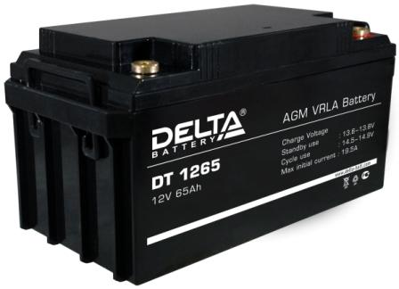

Аккумулятор Delta DT 1265

Описание товара
Герметизированные VRLA свинцово-кислотные аккумуляторы DELTA серии DT специально разработаны для эксплуатации в слаботочных системах. Изготавливаются по технологии AGM (электролит, абсорбированный в стекловолоконном сепараторе). Аккумуляторы DELTA серии DT обладают великолепным соотношением цены и качества, что обуславливает повсеместное использование серии в охранно-пожарных и иных системах безопасности. Отвечая международным стандартам безопасности, рекомендованы для применения в системах контроля и управления доступом.
Особенности
- Технология AGM позволяет рекомбинировать до 99% выделяемого газа;
- Нет ограничений на воздушные перевозки;
- Соответствие требованиям UL, IEC, Гост Р;
- Легированные кальцием свинцовые пластины обеспечивают низкий саморазряд, высокую конструктивную прочность решетки;
- Необслуживаемые.
- Не требует долива воды;
- Высокая плотность энергии;
- Корпус аккумулятора выполнен из пластика ABS,не поддерживающего горение.
Характеристики товара:
- Номинальное напряжение 12 В
- Число элементов 6
- Срок службы 7-10 лет
- Номинальная емкость (25°С)
- 20 часовой разряд (3.25 А; 1.75 В/эл) 65 Ач
- 10 часовой разряд (6.1 А; 1.75 В/эл) 61 Ач
- 5 часовой разряд (11.2 А; 1.70 В/эл) 56 Ач
- Саморазряд 3% емкости в месяц при 25°С
- Внутреннее сопротивление полностью заряженной батареи (25°С) 5.8 мОм
Все права защищены © 2020